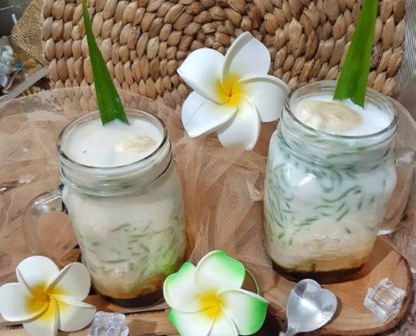
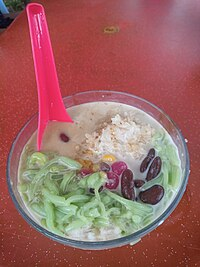
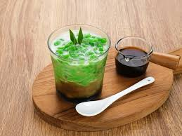

Ragam Kuliner dari Jawa

Cendol sebagai minuman tradisional khas Indonesia yang memiliki rasa manis dan gurih ini, merupakan inovasi dari dawet yang ditemukan oleh orang-orang Jawa, di sekitar abad 9 hingga awal abad 10. Pada awalnya terbuat dari tepung hunkue, tetapi kini cendol terbuat dari tepung beras, disajikan dengan es parut serta gula merah cair dan santan. Nama "Cendol" berasal dari serapan bahasa Jawa "Cèndhol"
Asal Usul dan Sejarah Es Cendol

Es cendol adalah minuman yang terbuat dari tepung beras dan sebagainya yang dibentuk dengan penyaring, kemudian dicampur dengan air gula dan santan. Cendol merupakan minuman penutup es manis yang mengandung tetesan tepung beras hijau, santan, dan sirop gula aren. Cendol populer di Indonesia dan Asia Tenggara lainnya seperti Brunei Darussalam, Kamboja, Malaysia, Singapura, Thailand, Vietnam, dan Myanmar.
Proses Membuat Es Cendol

Es Cendol memiliki beberapa keistimewaan yang membuatnya sangat dicintai oleh penduduk, antara lain, Sensasi kesejukan, nilai tradisional dan nostalgia, variasi rasa dan tekstur, bahan-bahan alami dan lokal, kemudahan dan ketersediaan, ikon budaya. Bagaimana cara membuatnya ? yuk kita simak resep membuat es cendol